Atendimento jurídico com excelência
Especialista em Direito Previdenciário, oferecendo soluções seguras, éticas e personalizadas para cada cliente.
Saiba mais- Formada em Direito - UESPI
- OAB/PI 15.290
- Pós-graduação em Direito Previdenciário